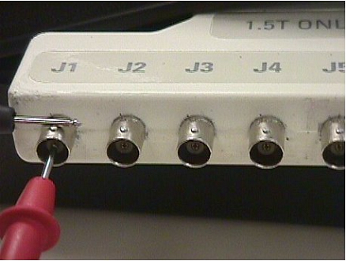
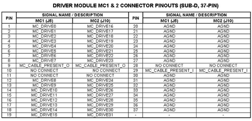

Proprietary to General Electric Company
Direction 5440000, Rev# 5
Signa HDxt Service Methods
Module Version 1.0, Version Date 4/26/07
Proprietary to General Electric Company |
Diagnostics >> Peripherals >> Driver Module Diagnostics
This test exercises all multicoil ports 1 to 16 one at a time during three (3) different test sets. The TR bias voltage on all the ports is initially set to the disable voltage (positive polarity) level.
This test is only for systems that have old style LPCA with the legacy coil connector.
Driver Module
(For 1.5T) MCR Tool, 2354598
Digital Multimeter
The first test set, starting at port 1, sequentially transitions the TR bias voltage on each multicoil port from 5V to 3V and then back to 5V. This is repeated until all remaining 15 ports have been exercised in this manner.
The next test set, starting at port 1, sequentially transitions the TR bias voltage on each multicoil port from 7V to 5V and then back to 7V. This is repeated for all the remaining 15 ports.
The last test set, starting at port 1, sequentially transitions the TR bias voltage on each multicoil port from 3V to 7V and then back to 3V. This is repeated for all the remaining 15 ports.
After the conclusion of the last test set, the test process ends.
The TR bias voltages output to each receive line can be measured at one of two places. If the Multicoil Receive (MCR) Tool (1.5T 2354598) is available, then the TR bias line voltages can be measured at the LPCA multicoil connector using the MCR Tool and a Digital Multimeter. See Illustration 1.
| ||||
| Most digital multimeters are ferrous and will be strongly attracted to the magnet. Exercise care when using the digital multimeter to take voltage measurements near the magnet. | ||||
Illustration 1: Measuring the TR Bias Voltages

The TR bias line voltages can be also measured at the J5 or J10 connectors on the rear of the Driver Module. See Illustration 2 below for the pinout identification of connectors J5 and J10.
Illustration 2: Pin-Out ID for J5 & J10 Connectors

Test Delay sets the length of time that each port is tested during each test set.
Un-blank Time is not used during this test since the TR bias voltage is always at a positive polarity un-blank level and never transitions to a negative polarity blank level.
<<< Driver Module Help document >>>